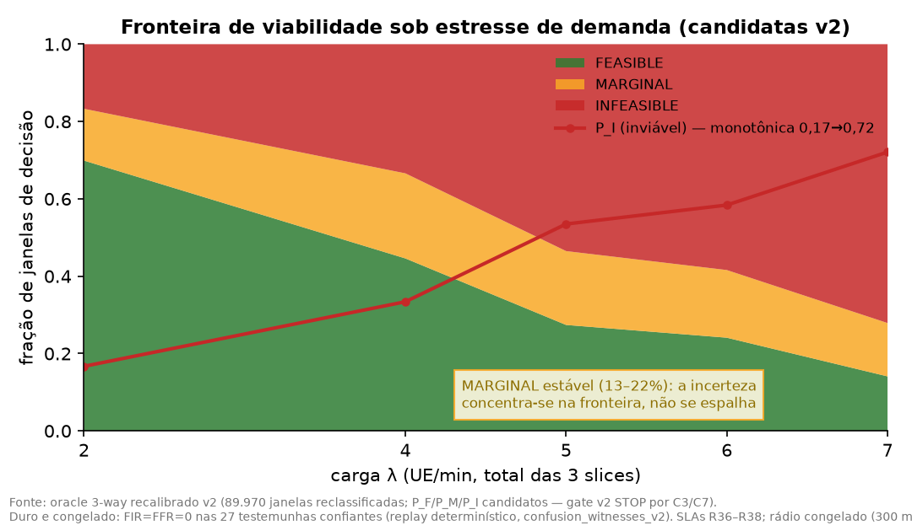
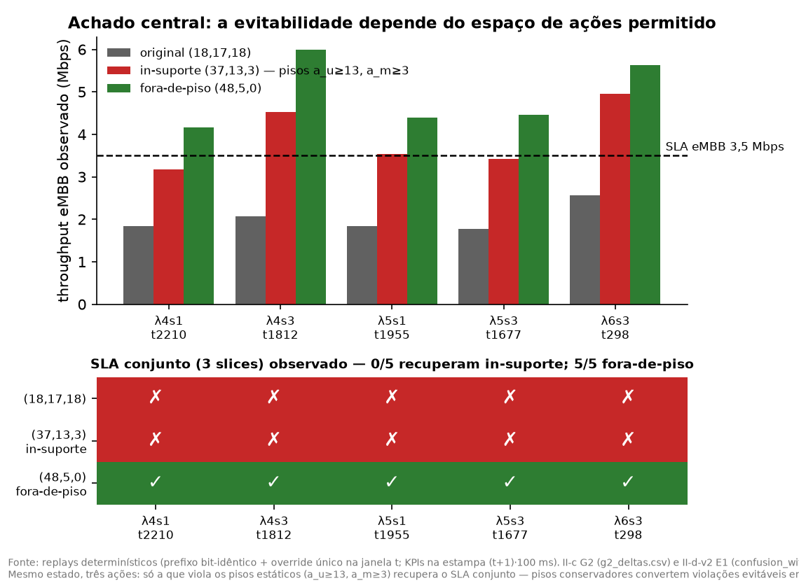
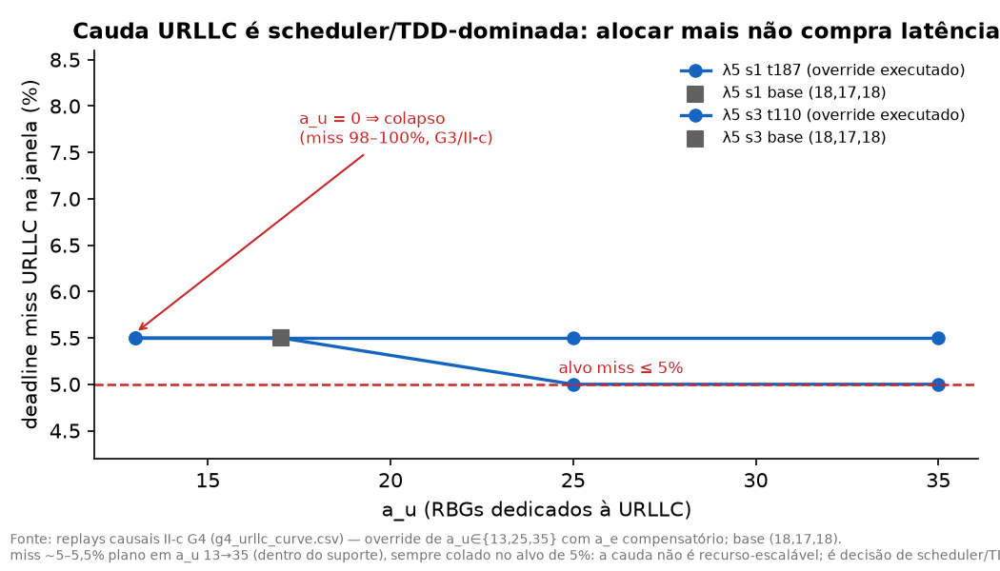
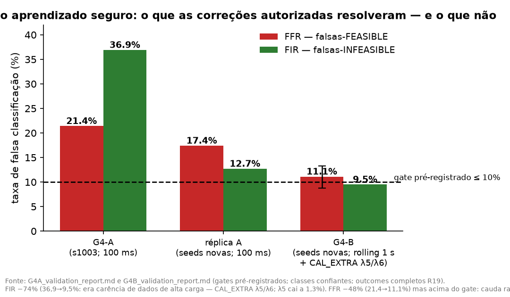
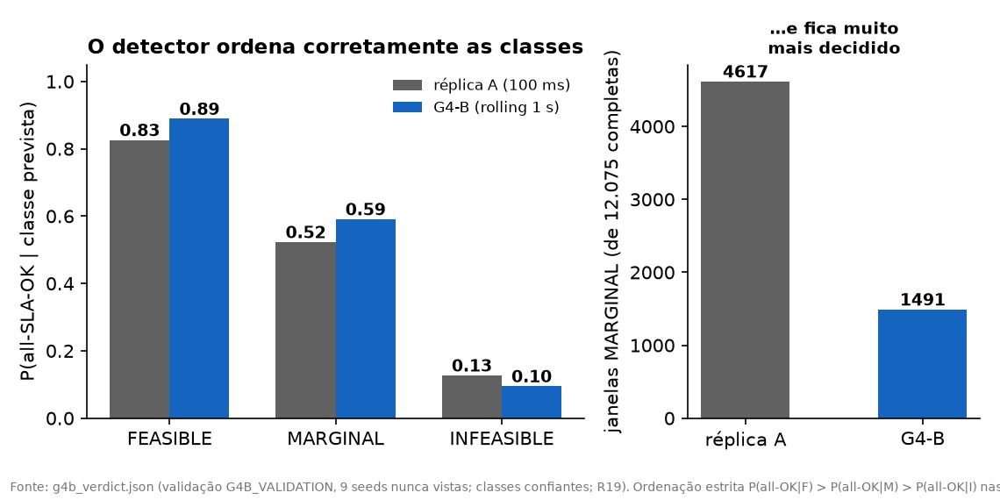
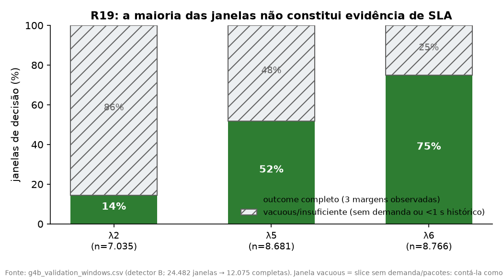
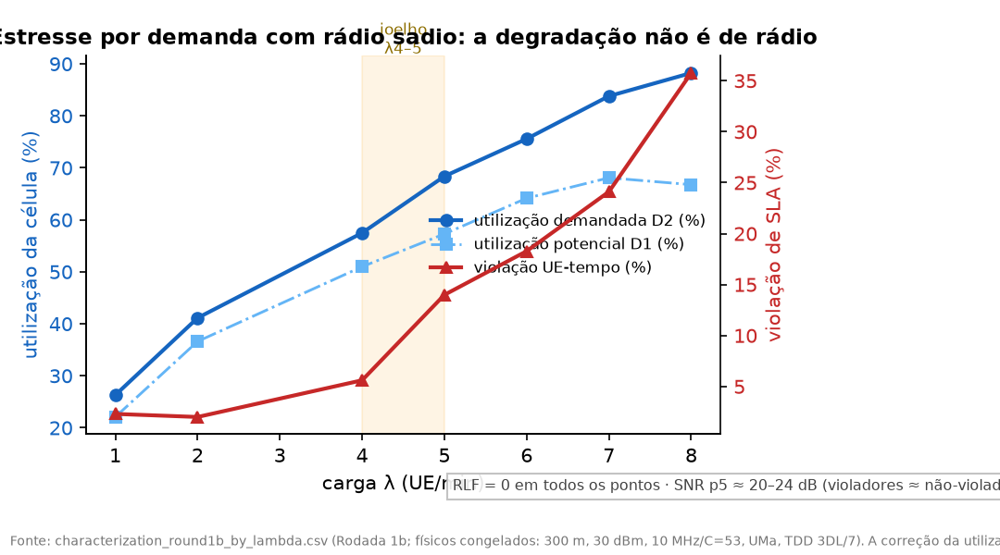
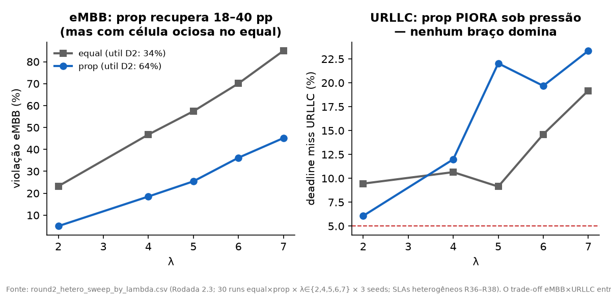

audit_v2/fig2_evitabilidade_AUDITADA.png: correto é 3/5 congelado. Rótulo "λ2 ~100%" corrigido para 85,6%.
Geradas em 04/11/2026 a partir dos artefatos congelados (script: gera_figuras_tese.py). Cada figura cita a fonte nosrodapé.
A inviabilidade cresce monotonicamente com a demanda (P_I 0,17→0,72) e a incerteza fica concentrada na fronteira (MARGINAL 13–22%).

Os mesmos 5 estados violados: a ação in-suporte (37,13,3) — que respeita os pisos estáticos — não recupera o SLA conjunto (0/5); a ação fora-de-piso (48,5,0) recupera (5/5). Pisos conservadores convertem violações evitáveis em inevitáveis-por-desenho.

Override executado de a_u 13→35 (com a_e compensatório) não muda o deadline miss (~5–5,5%, colado no alvo de 5%): a cauda é scheduler/TDD-dominada, não recurso-escalável.

Com gates pré-registrados: FIR −74% (curado com dados de alta carga) e FFR −48% (rolling 1 s) — mas o FFR para em 11,1%, acima do gate de 10%: a cauda rasa da URLLC é imprevisível pela representação estado-ação.

P(all-OK|FEASIBLE) > P(all-OK|MARGINAL) > P(all-OK|INFEASIBLE) estrita nas duas configurações; com rolling 1 s o MARGINAL cai de 4.617 para 1.491 janelas (detector 3× mais decidido).

51% das janelas da validação são vacuous/insuficientes: contá-las como “SLA satisfeito” (prática padrão) infla a segurança reportada de qualquer controlador.

Utilização sobe 26→88% com RLF=0 e SNR estável (violadores ≈ não-violadores): a fronteira da Fig. 1 mede demanda/espaço de ações, não colapso de SINR.

O equal deixa a célula ociosa e viola eMBB 23–85%; o prop recupera eMBB mas piora a cauda URLLC sob pressão — nenhum braço estático domina ⇒ a pergunta certa é evitável×inevitável.
